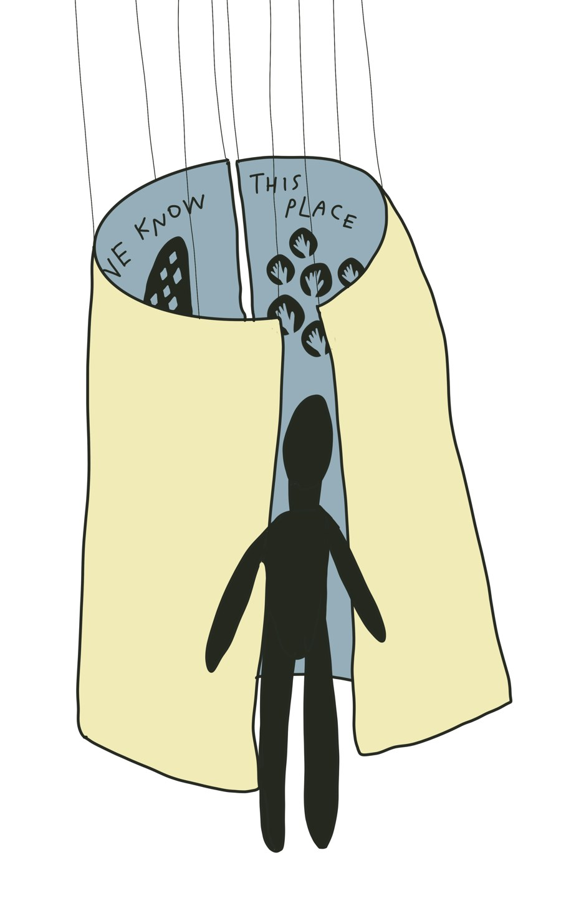

What if our future resembles
our past more than our present?
A QUILT INSTALLATION PROPOSAL
BY ZAK FOSTER
Concept
What is a quilt-grotto?
Backstory
No one knows who made the art inside the Seep Hollow Grottos, or when.
Some evidence suggests the artwork is over 12,000 years old.
Other signs inexplicably point 12,000 years into the future.
Why grottos / Why now
Grottos are caves, natural and built, set aside for devotion, and closely tied to folk-art traditions.
At a time when a bleak outcome can often seem inevitable, our shared future is the object of devotion here.
This future reflects everything humanity has learned, over the course of our existence, about living with both generosity and restraint.
How to build a quilt-grotto

Two twin quilts hang in a cylindrical formation.
Visitors poke their heads through an opening to see the interior.
The visitor’s path
Inside the quilted grotto, the pace slows and visitors meet with a sense of wonder and a grounded optimism for the future.
What visitors will see on quilts
Themes
Two ways light acts as material
Reflection
Shine a phone flashlight on the reflective fabric and it illuminates the poetry. Visitors discover this for themselves.
Translucency
The hall’s own light passes through the quilts, bringing out pleated folds, layered cloth, deep shadows, and highlights.
Expected needs
Scope
4 grottos (8 twin quilts) complete by the Festival of Quilts in summer 2027
Hanging
A way to suspend each grotto from above in a loose cylinder, about 45 cm (18 in) off the ground
Floor space
About 2 m² (22 sq ft) per grotto, with a 2 m (6.5 ft) walk-around on all sides. All four together need roughly 78 m² (840 sq ft)
Wear & tear
Touch is encouraged
I look forward to discovering the rest of it with you.
Contact
Zak Foster
Sewanee, Tennessee
Zak@zakfoster.com